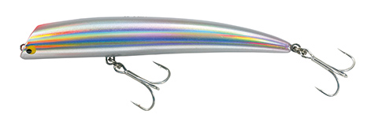
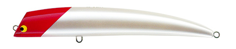
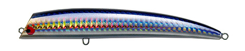
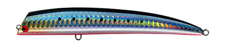
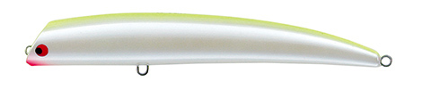

TKLM 12/18
（TKLM "12/18"）
TKLM 12/18（TKLM "12/18"）はTACKLE HOUSE（タックルハウス）のリップレスミノーです。
浅場の大型シーバスを狙うために生まれた「Tuned K-TEN リップレスミノー（TKLM）」シリーズの120mmモデル。TKLM 9/11からボディを大型化し、スライド幅をショートに、浮力を下げて一定の泳層に長くとどまるよう調整した、適度なアピール力のリップレスミノーです。

画像出典:タックルハウス公式HP
スペック
- メーカー
- TACKLE HOUSE（タックルハウス）
- タイプ
- フローティング（リップレスミノー）
- 全長
- 120mm
- 自重
- 18g
- 最大潜行
- 50cm
- フック
- ST-46 #3
- リング
- #4
- ターゲット
- シーバス
- 価格
- 2,300円（メーカー価格）
▼今すぐチェック

TKLM 12/18の特徴
リップレスならではのスライドアクションを、一定の泳層で長く見せられる120mmモデル
-
スライド幅をショートにした適度なアピール
TKLM 9/11のボディを大型化するのに合わせ、スライドアクションのスライド幅の割合をショートに調整。大きなボディでもアピールが強くなりすぎず、浅場の大型シーバスに自然に見せられる。
-
浮力を下げて一定の泳層に長くとどまる
浮力を抑えて浮き上がり速度を遅くし、一定の泳層に長くとどまるように設計。最大潜行50cmのシャローレンジを、ルアーを止めたり緩めたりしてもレンジを外しにくい。
-
低速〜中速域のレスポンスとマイルドなラトル音
低速から中速域でのレスポンスと泳ぎの能力を高めつつ、ラトル音をマイルドに抑えるモーション＆サウンドエフェクトサブシステムを搭載。音で警戒させにくく、スレた浅場でも使いやすい。
TKLM 12/18の使い方
基本はスロー〜中速のただ巻き。リップレスミノーらしいスライドアクションが低速域から出るので、巻きすぎずに一定のレンジを引いてくるのが基本です。
シリーズの持ち味である連続したソフトトゥイッチも有効で、軽くロッドを動かしてスライドさせながら引くと、120mmのボディでも自然に強く見せられる。流れのある場所ではドリフト気味に流し込み、浮き上がりの遅さを活かして同じ泳層に長く留めると効果的です。
TKLM 12/18の得意な状況
浅場の大型シーバスを狙う状況が最大の出番。
干潟・河口・サーフ・磯のシャローなど、水深が浅く、リップ付きミノーでは潜りすぎる・アピールが強すぎると感じる場面で強い。一定の泳層に長くとどまる性質から、レンジを外したくない流れの中のドリフトでも選びたい1本です。
ワンポイント
リップが無い分、巻き速度で泳ぐレンジが変わりやすいルアーです。浅場では「やや遅め」を基準に、ボトムを擦らない速度を最初に確認しておくと、レンジを安定させやすくなります。
反応が無いときは、ただ巻きとソフトトゥイッチを織り交ぜて、スライドの出し方を変えてみるのが手です。
TKLMシリーズの使い分け
| モデル | 全長／自重 | 得意な場面 |
|---|---|---|
| TKLM140G | 140mm／38g | ハードなフィールドや大型魚。K-TEN Gシステムで泳ぎ出しが早い |
| TKLM 12/18 | 120mm／18g | 浅場の大型シーバスに適度なアピール。一定泳層をキープ（本記事のモデル） |
| TKLM 9/11 | 90mm／11g | 浅場の大型シーバス用の基本モデル。極低速〜中速でスライド |
| TKLM 9/14 SW | 90mm／14g | 9/11のシンキング版。飛距離・操作性を高めたい場面に |
| TKLM 9/12.5 SP | 90mm／12.5g | サスペンド。低速の繊細な演出やストップ＆ゴーに |
| TKLM 8/9.5 | 80mm／9.5g | 海水では低浮力フローティング、淡水では沈み気味のサスペンド。汽水域に |
TKLMはサイズと浮力の違う6モデル展開。12/18はシリーズの中で「大きめのシルエットで、アピールを抑えて一定層を引く」役割を担うモデルです。
人気カラー
TKLM 12/18は通常15色＋限定カラーの展開。シャローのシーバス狙いでオススメのカラーを厳選して紹介します。

No.101 パール・レッドヘッド定番中の定番。濁りやナイトゲームでもシルエットを出しやすい。

No.110 SH・セグロカタクチカタクチイワシ系のナチュラルカラー。イワシが接岸している状況や澄み潮に。

No.112 SH・イワシ/レッドベリーイワシカラーにレッドベリーのアクセント。ナチュラルさを残しつつ少しアピールを足したいときに。

No.103 パール・チャートパールとチャートの高視認カラー。マズメや濁り潮のアピールに。
画像出典:タックルハウス公式HP
TKLM 12/18に似ているルアー
-
 VADUM125F（ヴァダム125F）
レガーレ
詳細はこちら＞
VADUM125F（ヴァダム125F）
レガーレ
詳細はこちら＞
全長125mm・自重21gのシャローランナーミノー。アピールを抑えたロール主体のアクションで、TKLM 12/18と同じく「浅場で強すぎない見せ方」を狙う1本。リップ付きで流れの中のコースをきっちりトレースしたいときの持ち替えに。
-
 コモモ125カウンター
ima
詳細はこちら＞
コモモ125カウンター
ima
詳細はこちら＞
全長125mm・自重22gの海水サスペンドモデル。レンジ30〜60cmと泳層が近く、なめらかに抑えたアクションでナチュラルに見せられる。止めても浮きにくい点も、一定層に長くとどまるTKLM 12/18と共通する。
-
 ショアラインシャイナーZ バーティスR 125F-SSR
ダイワ
詳細はこちら＞
ショアラインシャイナーZ バーティスR 125F-SSR
ダイワ
詳細はこちら＞
全長125mm・自重20.3gのスーパーシャローランナー。有効レンジ約30〜50cmと潜行レンジがほぼ同じで、平均72.1mの飛距離でより遠くの浅場を探りたいときに選びたい1本。